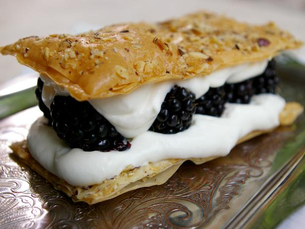

This is Blackberry Millfeuille!
- First, you have to get 2 sheets frozen phyllo pastry, thawed and cut in half
- Then, you have to add 3 tablespoons of clarified butter, melted
- After that, you have to add 1 tablespoon maple sugar, brown sugar or white sugar
- Finally, you have to add about 3 tablespoons/20 g of finely chopped hazelnuts
NOW THE DIRECTIONS TO MAKE THE FILLING!
- First, you add 1 cup/250 ml heavy cream. Then, add maple syrup, to sweeten. Next, add 1 teaspoon vanilla extract. After that, add about 1 pound/450 g blackberries
NOW THE DIRECTIONS TO BAKE!
- For the phyllo layers: Heat the oven to 375 degrees F. Lay a sheet of phyllo pastry on a work surface. Brush with melted butter. Sprinkle over about a teaspoon of sugar and some hazelnuts. Make 3 more layers the same way. Using a large knife or pizza cutter, slice the sheet into 8 rectangles. Arrange on a baking sheet and bake until golden and crisp, about 7 minutes.
NOW THE DIRECTIONS TO MAKE THE FILLING!
- For the blackberry filling: Whip the cream with enough syrup to sweeten, and the vanilla extract. Assemble the dessert just before serving: Lay a phyllo layer on each of 4 plates. Top each with 1/4 of the cream mixture. Arrange berries standing upright on top. Top each dessert with another round of phyllo. Serve.